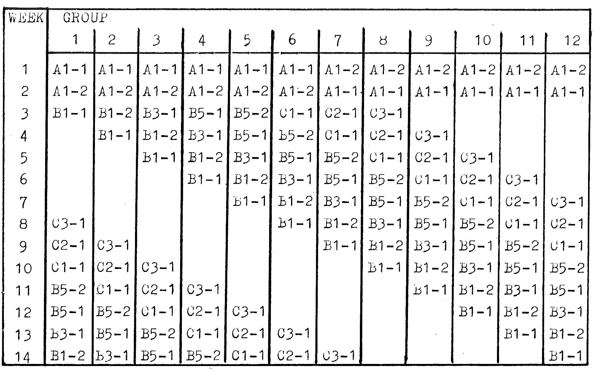

Introduction¶
Performing carefully prepared experiments is not only the most exciting way to learn physics, it is the best way to understand physics theory – the same way in which that theory was first deduced!
This collection of physics experiments is for Advanced Level students. In these experiments, students are encouraged to apply physics theory to a wide range of practical topics. The experiments collected in this book have each been performed successfully in classrooms by students. The labs have been revised and retested until students made no errors in following the procedures. Teachers are therefore largely freed from explaining procedures and are able to use the practical period to assist students in understanding theory and in analyzing experimental results. Students CAN perform these experiments and teachers and technicians CAN assemble or create all the needed equipment.
A big problem facing teachers and students doing practical exercises is the shortage of equipment. These experiments all use equipment commonly available in a school lab setting. Actually, the authors conducted all of the experiments with students at the Songea Boys Secondary School in Ruvuma, Tanzania, where they dealt with the problem of limited equipment.
Where equipment is limited the experiments are well suited for use in a circus of practical exercises. To conduct the circus, students may be grouped in pairs. In the first week each pair of students performs one of a set of experiments. In the second week, each pair performs a different experiment from the same set. In the third week, each pair performs another experiment and so on until all the students have done all the experiments in that set. The only exceptions to this rotation are two introductory practicals (A1-1 and A1-2) and the Exam papers which avoid more specialized equipment and can be done by half of the class at a time in sessions separate from the regular circus sessions. For the Exam papers we thank the Ministry of Eduction of the United Republic of Tanzania.
During a schedule of 4 terms, a minimum of 10 experiments can be done over the first 3 terms, with additional exam preparation the last term as follows:
Form 5 first term – Practical exercises A1-1 and A1-2 in the first two weeks, then a circus of eight other experiments.
Form 5 second term – Circus of eight experiments, then two exam practicals.
Form 6 first term – Exam practical in the first week, then a circus of eight experiments, then one exam practical.
Form 6 second term – Two exam practicals one per week, then two exam practicals in one 3 hour session.
A sample Form 5 first term schedule is shown below:

In this example the teacher chooses experiments B1-1, B1-2, B3-1, B5-1, B5-2, C1-1, C2-1, and C3-1 for the circus. The class in this example has 23 students and therefore 12 groups, but a class of any number of students can use a similar schedule. The circus lasts for the number of weeks equal to the number of groups. Some weeks a group may have no experiment to perform. In these weeks a teacher may choose to give theory assignments or to assign other experiments from this book, past exam papers, or original experiments. Because assembling and testing apparatus in the first week of the term is demanding, a circus of eight experiments seems a good choice in the first years when this system is used.
Students using this book will successfully and efficiently complete a wide range of experiments in Advanced Level physics.
Bob Drach & Norman Price